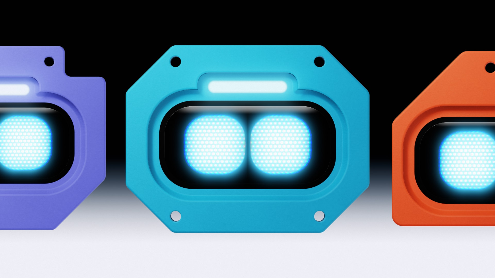
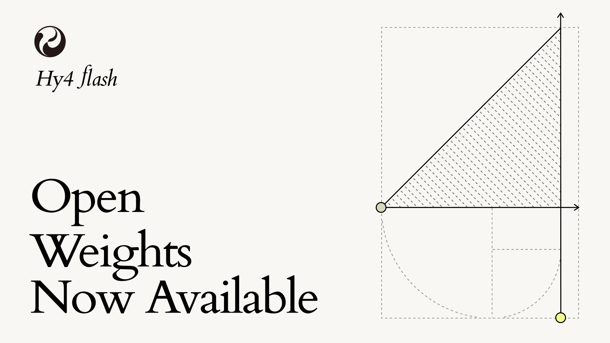
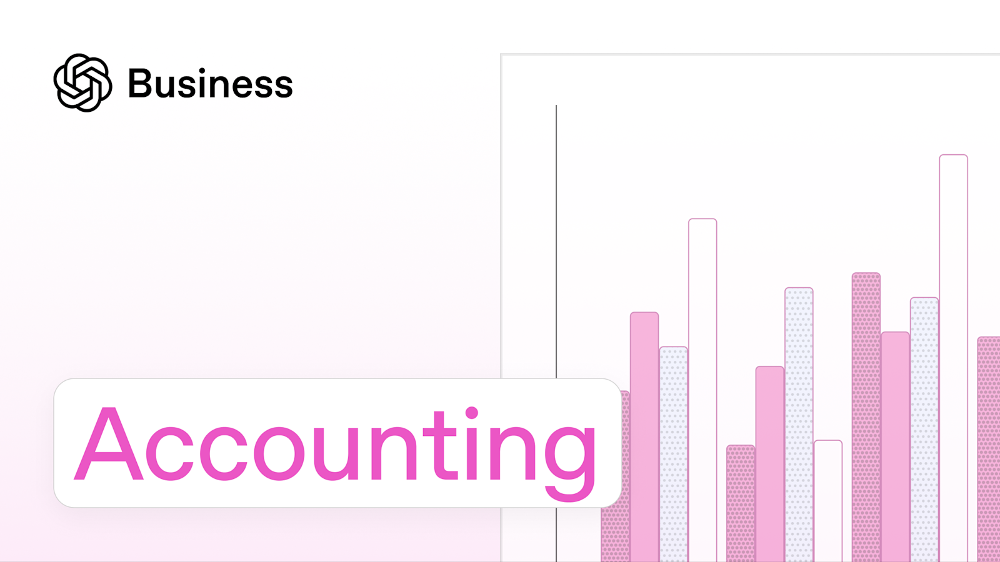
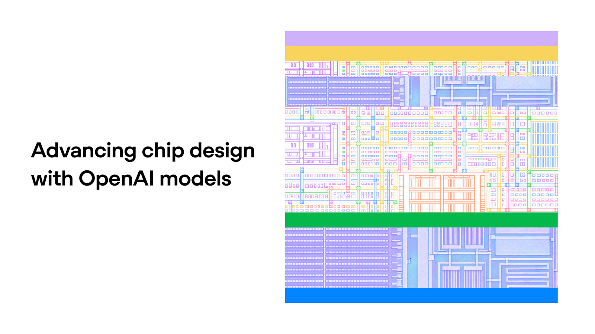

AI Intelligence Daily · 2026-11-19（周四）
统计窗口：2026-11-18 08:00 → 2026-11-19 08:00（上海 / Asia/Shanghai）· 事实与判断分区 · 国内/国际双轨 · 承接 Daily 11-18；11-18 白天快讯两轮 PUSH（09:05 Devin Bots、19:05 MCP 参考服务器 v2.5.0），其余为 SILENT，最近扫描为 22:55 CST（覆盖至约 14:55Z）。本报主窗如上；隔夜切片（14:55Z→00:00Z）出现 Anthropic IPO 定价、Gemini 4 Neon、ChatGPT for Accounting 与 OpenAI 异步折扣/研究加速报告，为今日主线。· 已在售 Desktop/CLI（不计首次邀测）：主窗重大工作面 Devin Bots / Desktop v3.14.30819（快讯 09:05 已推，Daily 11-18 漏收）· 补收 Mistral Vibe Desktop（官方发行说明日期 11-17，@MistralAI 11-18 15:17:42Z）· 点版本：Factory latest 1.14.0（文档仍见 1.13.0）· Codex latest 0.170.0（alpha 已见 0.172.0-alpha.1）· Copilot CLI latest 1.0.114 · Antigravity CLI 1.5.11 · OpenCode 2.x v2.3.2（1.x 仍 v1.19.6）· VS Code 稳定版 1.147.0 · MCP servers v2.5.0 / mcp-server-git 2026.11.18。持平或仅旁支：Qwen Code latest 仍 0.28.0（nightly/preview 旁支跳动）· Claude Code latest 仍 2.1.327（next 已至 2.1.328 @23:09:39Z）· CodeBuddy latest 仍 2.185.0 · MiniMax CLI 仍 0.7.7 / Desktop 仍 3.1.16 · 千问办公仍 2.1.0 · Qoder changelog 仍 0.5.14 · dsh latest 仍 0.2.2-rc.1（next 已至 rc.5）· ZCode / 小艺 Work / StepCode 相对 22:55 扫描未见新的 latest 发船。★（约 08:16 CST，相对 Daily 11-18 约 08:08 CST，约 24 小时）：open-code-review 54,168（+459）· deepseek-harness 283,608（+623）· chat-demo 4,817（+299）· agent-desktop 25,295（+298）· agent-browser 52,651（+288）· opencode 227,830（+239）· chrome-devtools-mcp 58,209（+180）· codex-security 14,111（+155）· dsh-superagent-prototype 23,821（+150）· DeepInfer 26,203（+36）· servers 92,089（+15，已至 v2.5.0）· code-verification 282（+14）
今日一句话判断
今天真正改变行业位置的，是 Anthropic 把 IPO 定在每股 83 美元——高于此前对外的 70–78 美元区间，预计今日（11-19，美东交易时段）在纳斯达克以代码 ANT 开谈；而真正改写「日常该调用哪一档模型」的，是 Google 把 Gemini 4 Neon 放进 Carbon 与 Hydrogen 之间，以每百万 token 3/15 美元的官方标价，去承接高频的前沿编码、知识工作与科学任务，并在 Antigravity 里把 Neon 规划器与 Hydrogen 执行器写进同一套 Orchestrator。 同一窗里，MCP 参考服务器对 11-11 加固的续补丁、微软官方 agent-framework 包在 PyPI 上被植入凭证窃取程序，以及混元 Hy4 flash 开源权重，把「默认工具链是否可信」和「低价日常档是否可自托管」一并摊开。不要把定价新闻写成已经开盘：本报出站时（约 08:10–08:20 CST）仍早于 11-19 的美东开盘。
专栏一｜新闻
本栏结构：
- 国际头条：Anthropic IPO 定价 83 美元/股，代码 ANT，预计 11-19 开谈（UPDATE 拟议 IPO 跟踪）
- 国际头条：Google 发布 Gemini 4 Neon（Carbon 与 Hydrogen 之间的高频前沿档；Antigravity / Gemini 应用 / API；Orchestrator 可把 Neon 与 Hydrogen 配对）
- 国际中栏：MCP 官方参考服务器 v2.5.0，git 参考实现再发高危续补丁（UPDATE 235，快讯 19:05 已推）
- 国际中栏：微软官方 PyPI 包
agent-framework1.26.1 / 1.26.2 被植入凭证窃取程序（漏看补收） - 国际中栏：Cognition Devin Bots（Daily 11-18 漏收，快讯 09:05 已推）
- 国内中栏：混元 Hy4 flash 开源权重（UPDATE 255）
- 国际中栏：ChatGPT for Accounting；Responses API background 2 小时/8 小时折扣窗口；OpenAI 发布新的研究加速 / RSI 指标报告
- 短讯与补收：Genie 4 向 Ultra 开放、Mistral Vibe Desktop、OpenAI×AMD 芯片设计、Qoder Credit 下调、点版本与促销
排序依据：重要度 → 与两条主线的相关性 → 时效。IPO 改变的是 Anthropic 的资本与治理位置；Neon 改变的是可调用的工作模型分档；安全与开源条目直接碰到用户的协议和引擎假设。
1. Anthropic 将 IPO 定价为每股 83 美元，预计今日以 ANT 在纳斯达克开谈
S · UPDATE · 国际 · I/J · 隔夜（清晨）· watchlist 270 · 非产品发船
发生时间：官网新闻稿标注日期 2026-11-18；官方 X @AnthropicAI 2026-11-18T23:29:00Z（11-19 07:29:00 CST）。本报出站时美东仍为 11-18 晚间，11-19 的纳斯达克交易尚未开始。
发生了什么
Anthropic 官方新闻稿写明：Anthropic, PBC 已将其 A 类普通股的首次公开发行定价为 每股 83.00 美元。本次发行共 980,000,000 股 A 类普通股，其中 956,351,354 股由公司出售，23,648,646 股由部分售股股东出售；公司不会从售股股东的出售中获得任何所得。股票预计于 2026-11-19 开始在 Nasdaq Global Select Market 交易，代码 「ANT」；发行预计于 2026-11-20 交割，须满足惯例交割条件。公司并向承销商授予 30 天期权，可额外购买最多 147,000,000 股。新闻稿还写明，相关注册声明已于 11-18 被美国证券交易委员会宣布生效；发行仅通过招股说明书进行。主承销商联络人列出的是 Goldman Sachs 与 Morgan Stanley。
按官方股数与定价可直接算出（均为发行价口径的总金额，未扣承销费用，也不是官方自己写出的「募资额」标签）：公司出售部分为 956,351,354 × 83 = 79,377,162,382 美元；含售股股东在内的整次发行是 980,000,000 × 83 = 81,340,000,000 美元。超额配售权若全部行使，还可再增加最多 147,000,000 × 83 = 12,201,000,000 美元，这一点官方只给了股数上限，没有写清最终是否行使。官方新闻稿没有给出公司估值或已发行总股本，因此本报不把媒体报道中的万亿美元级估值写成已核对事实。此前对外营销区间多为 70–78 美元，83 美元高于该区间；最终还要以招股说明书和交割结果为准。
@AnthropicAI 在 07:29 CST 的原帖写：「We've priced our IPO at $83 per share, with trading expected to begin on Nasdaq tomorrow.」并附上同一篇新闻稿链接。本报出站时距离「tomorrow」的美东开盘（约 22:30 CST）还有十几个小时，不能写成已经上市交易。
我的判断
判断：这是窗口内对行业格局最硬的资本事件，但不是新的模型或协议发船。重要的是三件同时成立的事：价格明显高于此前区间；公司自己出售的份额占绝对多数；交易时点被明确放到 11-19。它把「实验室何时成为公众公司」从预期变成了可核对的官方定价。不要把这件事解读成 Claude 的技术路线发生了变化——新闻稿几乎不谈产品。它改变的是治理、披露、股东构成，以及今后每一份安全与业务声明都会被放进上市公司的语境里阅读。
未来影响
短期，市场会看 ANT 开盘后的定价是否站得住，以及最终招股说明书里的风险因素、双重宗旨/公益公司安排和主要股东锁定。中期，上市公司身份会提高定期披露的密度，也可能改变 Anthropic 在算力采购、人才与合作上的约束。对模型竞赛本身，定价本身不增加新能力；它只改变谁在为什么样的时间表承担责任。
对智能体互联网
无新的互操作协议或身份标准。若上市后的定期披露开始更完整地讨论 Claude 的企业连接器、代理权限或安全事件，那会变成可跟踪的治理信号，而不是今天的事实。
对 Work / Agent 引擎
无直接 Harness 发船。启示是：Claude 产品线今后的默认模型、速率限制与企业条款，会更多暴露在财报与风险披露里，而不是只出现在博客。采购和路线对照时，要把「产品声明」和「上市公司披露」分开看。
值得进一步做什么
- 盯 11-19 美东开盘后的官方成交与最终招股说明书，而不是盘前媒体估值。
- 对照售股股东名单、超额配售是否行使，以及交割日是否如期在 11-20。
- 暂不必因为定价本身去改引擎设计。
真实来源
- https://www.anthropic.com/news/anthropic-prices-initial-public-offering
- https://x.com/AnthropicAI/status/2123196808675405860
2. Google 发布 Gemini 4 Neon：放在 Carbon 与 Hydrogen 之间的高频前沿档，Antigravity 可把它和 Hydrogen 组成一对 Orchestrator
A · NEW · 国际 · A/B/C/I · 隔夜（清晨）· watchlist 271 · 进入 Antigravity 桌面/CLI/扩展与 Gemini 应用，但不是新的 Desktop 客户端发船
发生时间：官方博客标注 Nov 18, 2026；@GoogleDeepMind 主帖 2026-11-18T21:34:04Z（11-19 05:34:04 CST），id 2123167884411077030；@GoogleAI 21:35:30Z；@GeminiApp 21:37:20Z；@antigravity 22:06:35Z；@cursor_ai 宣布在 Cursor 上架 23:35:07Z（07:35:07 CST）。
发生了什么
Google 官方介绍文把 Gemini 4 Neon 写成「在复杂软件工程、知识工作与科学工作流上，把前沿水平的智能和更快的端到端任务完成放在一起」的新模型。它在 Gemini 4 家族中的位置被写得很清楚：Carbon 处理最难、长周期的项目，Hydrogen 负责快速日常执行，Neon 则面向又需要前沿推理、又足够高频的工作。官方 API 标价为 每百万输入 token 3 美元（缓存输入 0.15 美元，文中写 95% 折扣）、每百万输出 token 15 美元，上下文窗口 100 万 token。思考档被写成四级（Low 到 Extra High / xhigh）。
可用性官方写的是即日起滚动上线：Gemini API 付费档（Google AI Studio，以及 Android Studio）；Gemini for business（经 API 或模型下拉框）与 Google Antigravity；Google AI Pro / Ultra 订阅者可在 Gemini 应用中选择 Neon，付费 Pro / Ultra 也可在 Antigravity 中使用。Antigravity 官方博客进一步写明：Neon 正在桌面应用、CLI 和 IDE 扩展中推出；Orchestrator 现在支持在同一会话里把 Gemini 4 Neon 当作规划器、把 Gemini 4 Hydrogen 当作执行器——Neon 负责前置规划、架构和复杂推理，Hydrogen 接手常规改代码、包装更新和测试；若 Hydrogen 遇到摩擦，再交回 Neon 检查状态、修复计划并继续。
官方给出的对照数字均须标明来源，且部分依赖自建或合作评测，不能写成已被广泛复现的第三方结论。介绍文称：在 Artificial Analysis Intelligence Index 的 xhigh 思考档上，Neon 以 61 分排第 3；在 Artificial Analysis Coding Agent Index 上以 58.6 排第 1；Vals Index 为第 2（70.9%）；Terminal-Bench 4.1 为 65.2%；FrontierCode 2.0 在默认 high 设定下为 46.2%；SWE-sweep 在 mini-SWE harness 上为 12.8%，在 Google Antigravity 上为 39.0%。官方还写，默认 high 思考档上每任务成本比 Carbon 低 32%。网络与安全方面，文中把「Neon for cyber」写成将在未来几天作为 Fairwind Program 向受信任的防御者滚动开放，并给出 AutoBaxBench / WebExploitBench / SEC-bench Pro 等官方数字。模型卡见 Gemini 4 Neon Model Card。
@cursor_ai 在 07:35 CST 宣布 Neon 已在 Cursor 可用，并称在默认 effort 下 CursorBench 4.1 为 63.7%，高于 Gemini 4 Hydrogen 的 57.3%，标价同样是 3/15 美元。这是官方分发帖，评测口径以 Cursor 自己的说明为准。
我的判断
判断：这不是又一个总参数公告，而是 Google 把「工作模型」从两档补成三档，并把分档写进了产品编排。Neon 的官方叙事几乎与昨天的 GPT-6.2 Sol / Astra 分档对称：最难点留给更贵、更慢的旗舰，日常循环留给更快的档，中间那一档要同时够聪明、够便宜、够快。对用户的 Work / Agent 引擎来说，更值得记下的是 Antigravity 把「规划模型」和「执行模型」做成同一套 Orchestrator 的一等能力，而不是只让人在下拉框里手动切换。官方基准领先不要直接当成行业结算分数；把它看成 Google 选择展示的方向：编码代理、长任务、更低的每任务成本和更少的编造。
未来影响
若 3/15 的标价和「比 Carbon 低 32% 的每任务成本」在真实 Agent 循环里站得住，企业侧的默认编码模型可能会更多落在这一档，而不是始终调用最贵的旗舰。Neon + Hydrogen 的配对若被其他 Harness 模仿，调度层会从「选一个模型」变成「为规划与执行分别选模型，并规定何时交还」。Fairwind 则说明：更强的网络能力不会默认进入所有调用面。
对智能体互联网
无新的跨厂发现或身份协议。Fairwind 是又一条「高能力安全工具走授权通道」的产品线，和 OpenAI Daybreak 属于同一类治理选择。
对 Work / Agent 引擎
直接相关。可对照的设计点包括：按任务阶段在规划模型与执行模型之间切换；摩擦时交还规划器而不是让执行器硬闯；把思考深度做成四级可调的成本控制；以及不要把「官方编码榜第一」当成换掉自建验证循环的理由。官方自己也强调 Neon 在长会话里的上下文压缩和减少重复读文件。
值得进一步做什么
- 对照官方模型卡与第三方复测，而不是只引用介绍文分数。
- 在自建 Harness 里试一次「规划器 / 执行器」配对，明确交还条件。
- 跟踪 Fairwind 的实际准入，以及 Cursor 等外部工作台的上架与限流。
配图
见图 1（官方介绍文发布配图，来源页 Introducing Gemini 4 Neon）。

真实来源
- https://blog.google/innovation-and-ai/models-and-research/gemini-models/introducing-gemini-4-neon/
- https://antigravity.google/blog/gemini-4-neon-in-google-antigravity/
- https://deepmind.google/models/model-cards/gemini-4-neon/
- https://x.com/GoogleDeepMind/status/2123167884411077030
- https://x.com/antigravity/status/2123176067380711725
- https://x.com/cursor_ai/status/2123198346802450926
3. MCP 官方参考服务器发布 v2.5.0：11-11 的 git 加固再次被绕过
A · UPDATE · 国际 · G/E/C · 主窗 · watchlist 235 · 快讯 11-18 19:05 已推
发生时间：GitHub Release v2.5.0 发布于 2026-11-18T09:13:14Z（17:13:14 CST）；PyPI mcp-server-git 2026.11.18 上传于 09:15:43Z；npm @modelcontextprotocol/server-filesystem@2.4.0 与 server-everything@2.3.1 约 09:19Z。
发生了什么
官方参考服务器仓库发布 v2.5.0，发行说明写明修复了三个服务器中的八个漏洞。mcp-server-git 须升到 2026.11.18（受影响至 2026.11.11）：其中包括合并后不再触发 Git 自动 maintenance、关闭懒加载 fetch、在工作区写入后再读取 filter/merge driver、拒绝指向工作区外的 index 项，以及不再让子模块自有配置执行程序。这些路径说明，上一轮 harden_repo 并没有把配置执行面收死。server-filesystem@2.4.0 修复 Linux/macOS 上目录列举阶段的 TOCTOU，并写明 Windows 列举仍未锚定。server-everything@2.3.1 补上 NAT64 前缀的 SSRF 守卫遗漏。日期版本线（2025.x / 2026.x）仍不会被包管理器自动升到语义化版本，必须显式安装补丁包。本报出站时这些包的 latest 仍停在上述补丁版本，未见更新的 CVE 编号。
我的判断
判断：与 11-11 快讯是同一参考实现的续作，不是新协议版本。短期信号是立刻升级并盘点模板是否钉死日期版本；长期信号是「按键名单硬化」挡不住 Git 配置面的长尾，不能把 2026.11.11 当成已闭合。
未来影响
凡把「只读 Git 工具」或「已 harden 的仓库」当成可信边界的客户端、沙箱和多 Agent 编排，都需要把参考实现的补丁水位算进信任假设。Windows 上的列举残余仍是未收口的点。
对智能体互联网
MCP 参考实现仍是大量客户端与模板的默认依赖。发现、授权和跨 Agent 调用链如果假定「官方参考服务器已经安全」，会被这一轮再次证伪。
对 Work / Agent 引擎
凡内置或默认拉起 mcp-server-git / server-filesystem 的 Harness，应将 git 2026.11.18 与 filesystem 2.4.0 视为当前最低线，并检查自研 Git 工具是否复制了同一白名单。
值得进一步做什么
立即升级受影响包；清点日期版本钉死情况；跟踪 CVE 是否补录，以及 filesystem 在 Windows 上的残余；对照自研 Git MCP 做一次同类检查。
真实来源
- https://github.com/modelcontextprotocol/servers/releases/tag/v2.5.0
- https://github.com/modelcontextprotocol/servers/security/advisories/GHSA-h2g3-rwxm-xfm3
4. 微软官方 PyPI 包 agent-framework 的 1.26.1 / 1.26.2 被植入凭证窃取程序
A · NEW · 国际 · G/B · 补收（事件在 Daily 11-18 窗尾，顾问发布紧挨日报出站）· watchlist 272
发生时间：Wiz 时间线——合法 1.26.0 于 2026-11-12T18:25Z 发布；恶意 1.26.1 于 2026-11-17T20:35Z（11-18 04:35 CST） 上架，1.26.2 于 21:08Z 上架，约 21:30Z 已从 PyPI 消失。GitHub Advisory GHSA-764m-3ppc-5m73 于 2026-11-18T00:31:26Z（08:31 CST） 公开，分级 Critical / malware，本报核验时仍无 CVE。Wiz 在 11-18 14:00 UTC 更新了根因分析。Daily 11-18 与当日 09:05–19:05 快讯均未写入，属漏看补收。
发生了什么
这不是 typo-squatting，而是官方 Microsoft Agent Framework 的 PyPI 包名 agent-framework 在发布者通道上出现了两个恶意版本。Wiz 写明：安装后会在 site-packages 根目录放下 .pth 文件（1.26.1 为 agent_framework_meta.pth，1.26.2 为 af_runtime_diag.pth）；Python 会在每次解释器启动时执行 .pth，因此即使用户从不 import agent-framework，窃取程序也会运行。它收集含 TOKEN/SECRET/KEY/AZURE/GITHUB 等名字的环境变量、最多 300 个 /proc/*/environ、Azure CLI 与各类凭证文件，并主动索取 Azure DevOps OIDC 与 Azure IMDS 令牌，压缩后发往 webhook.site。Wiz 称该 webhook 为免费档、至多约 50 个请求被记录。本报核验：PyPI 当前 latest 仍是 1.26.0（2026-11-12T18:25:37Z 上传），JSON 中已无 1.26.1 / 1.26.2 键。
Wiz 11-18 的更新把根因写成：攻击者似乎拿到了用于签名和发布该包的微软 ESRP（Engineering System Release Pipeline）客户端证书与私钥；第一次从 AWS 发布被 IP 过滤拒绝，第二次从微软自有 IP 空间发布成功。工具链自我标识为开源 AI 渗透测试框架 Cairn。这些细节目前来自 Wiz 的分析，不是微软第一方归因稿。本轮未检索到 Microsoft / MSRC 就此事发布的专门声明，GitHub 上 microsoft/agent-framework 对本轮查询返回 404，也不要把仓库缺失写成已确认的官方回应。
我的判断
判断：这是对 Work / Agent 引擎供应链最直接的安全事件之一。危险不在「又一个恶意包」，而在于官方包名、启动即执行的 .pth 钩子，以及目标明确对准 Azure / 开发管道凭证。Wiz 关于 ESRP 证书的分析如果成立，问题就不只是「记得到 1.26.0」，而是发布通道本身被借用。在微软官方说明出现前，根因只能标注为第三方取证，不能升格为公司确认。
未来影响
短期，任何在 11-17 20:35Z 至 21:30Z 之间升级过该包的环境都需要重建并轮换可能被触达的云与 CI 凭证。中期，Agent 框架、SDK 和 MCP 服务器的发布签名与回滚流程会成为企业采用的审查项。
对智能体互联网
跨 Agent 调用如果默认信任「官方包名 + 包管理器 latest」，会把上游发布通道的失陷直接带进调用链。凭证窃取的目标包括云身份与 CI OIDC，这类令牌往往就是代理代表用户行动的依据。
对 Work / Agent 引擎
凡在运行时或 CI 中安装 agent-framework 的工作区、沙箱镜像和开发机，都应把「解释器启动钩子」和「锁定到已核验版本」写进默认假设。不要只扫描 import 图。
值得进一步做什么
- 核对自己的锁文件与镜像，确认没有短暂装上 1.26.1/1.26.2；若有，重建环境并轮换 Azure / GitHub / 云密钥。
- 持续跟踪微软或 MSRC 的第一方说明与 CVE。
- 把 PyPI/npm 的发布签名和版本钉死，纳入默认安全检查。
真实来源
- https://www.wiz.io/blog/malicious-version-of-microsofts-agent-framework-published-to-pypi
- https://github.com/advisories/GHSA-764m-3ppc-5m73
- https://pypi.org/project/agent-framework/
5. Cognition 正式发布 Devin Bots：从完成任务转向长期拥有结果
A · NEW · 国际 · B/C/D/E · 补收（Daily 11-18 窗内发船，当日日报漏收；快讯 11-18 09:05 已推）· watchlist 269 · desktop_shipping=重大工作面，非首次邀测
发生时间：官方博客标注日期 2026-11-17；@cognition 主帖 2026-11-17T17:03:55Z（11-18 01:03:55 CST），id 2122737511684587551；Desktop changelog v3.14.30819 页 Last-Modified 2026-11-17T23:31:55Z。本窗 @cognition 另于 16:37:55Z 发布案例帖，产品顶条未见新版本号。
发生了什么
Cognition 宣布 Devin Bots 上线：这是带自有记忆和工具的持久 Agent，可以并行带领多台 Devin，去「拥有一个结果」而不是只做一张任务单。官方对照是「把某功能移植到 Android」vs「保持 Android 与 iOS 对等」。Bot 会拆解目标、在各自的云主机上启动并跟进会话，只把需要人判断的事项送进 Needs You；也可按日程或事件触发。官方写 Today 起可在 devin.ai/bots 使用。Desktop 稳定版 changelog 顶条已从 Daily 11-18 所记的 v3.13.4 升到 v3.14.30819，第一条新功能就是 “Devin Bots are now available”。官方案例与「每条消息合并 PR 提升 4.5 倍」等数字均来自该博文，不是第三方复现；官方博客与产品页仍未给出订阅价格或额度。
我的判断
判断：这是一线 Coding / Work Agent 厂把「管理一层」做成正式产品面。3.13.4 仍是同一天的 Command Center 修补；3.14 与博客、@cognition 17:03:55Z 线程才是 Bots 发船。协调目前发生在 Cognition 产品内部，没有新的公开互操作协议，故按 A 而不是 S 写入日报。
未来影响
若「结果负责 + 只在关键决策上打断人」被更多厂商做成默认工作面，Harness 的委派单元会从单次任务变成可长期拥有的目标，人的工作也会更多转移到成功标准、评价方式和授权边界。
对智能体互联网
无新的公开 Agent 协议或跨厂发现机制。Bot 与 Bot 的交接目前是同一产品内的编排。
对 Work / Agent 引擎
直接相关。可对照：持久目标、子会话而不是单轮 loop、Needs You 式集中审批，以及「没有可运行的评价就无法拥有结果」。
值得进一步做什么
打开产品页与文档，核验模板、调度和审批边界；以官方定价页为准，不沿用非官方价格传言。
配图
见图 2（官方博客封面，来源页 Introducing Devin Bots: from tasks to outcomes）。

真实来源
- https://devin.ai/blog/introducing-devin-bots
- https://docs.devin.ai/desktop/changelog
- https://x.com/cognition/status/2122737511684587551
6. 腾讯混元将 Hy4 flash 开源权重上架：兑现「计划开源」
A · UPDATE · 国内 · A/I/C/H · 主窗 · watchlist 255
发生时间：@TencentHunyuan 主帖 2026-11-18T04:39:34Z（12:39:34 CST），id 2122912575302119554；Hugging Face tencent/Hy4-flash 的 lastModified 为 2026-11-18T04:24:08Z。随后 @TencentHunyuan 于 07:02:57Z 补充 GGUF 链接，16:46:05Z 预告 11-20 的 Reddit AMA。
发生了什么
官方 X 宣布 Hy4 flash 已开源权重，包括 Hy4 flash-FP8 与 Hy4 flash-Base，并写「224B（12B 激活）、1M 上下文、原生多模态」，许可为 Tencent Hy License。主仓库在 Hugging Face 的 tencent/Hy4-flash；同组织下可见 FP8 与 Base 仓库，lastModified 与主仓一致。这是对 Daily 11-17 所记「计划开源、当时尚未见到权重」的兑现，不应再写成新的模型发布。模型卡给出了更细的参数拆分（含 Engram、ViT、起草模块等），与官方帖中的「224B / 12B」是两套口径，引用时分开写，不要合成一个自造总数。GGUF 补充指向的是 AngelSlim/Hy4-flash-GGUF，由官方账号转发，可作为量化格式可用性，但不等于官方主仓本身。OpenCode 于 17:28:40Z 称 Hy4 flash「接下来 10 天仍在 OpenCode 上独占免费」，这是第三方平台促销，不要写成腾讯官方调价。
我的判断
判断：产品定义没有变，变的是可复现与可自托管。对国内日常档来说，这比再报一次目录价更重要：有权重，才能真正对照延迟、工具调用和许可边界。许可文本必须自己读，不能默认等同于宽松的开源许可。
未来影响
若权重与许可允许在自有基础设施上稳定服务，Hy4 flash 会成为一套可核对的「低价日常 Agent 档」基线，而不仅仅是 TokenHub 上的 API SKU。11-30 的五折仍在有效期内，开源和促销要分开跟踪。
对智能体互联网
无新协议。开源权重降低了把该模型接入自有 Agent 服务网络的门槛，但许可与使用约束仍是接入条件。
对 Work / Agent 引擎
可把它当作国内日常档的自托管对照：12B 激活、1M 上下文、原生多模态，是否足以支撑长会话工具循环，要用真实任务而不是官方演示来验证。
值得进一步做什么
核验许可条款与主仓文件完整性；如需本地部署，再评估 GGUF / 推理框架；不要把第三方平台限免写成官方价格。
配图
见图 3（官方 X 发帖配图，来源页 @TencentHunyuan 12:39 CST 主帖）。

真实来源
- https://x.com/TencentHunyuan/status/2122912575302119554
- https://huggingface.co/tencent/Hy4-flash
7. OpenAI 推出 ChatGPT for Accounting：会计插件 + 伙伴插件，沿用「先草稿、人审核」
A · NEW · 国际 · E/C/I · 隔夜 · watchlist 273
发生时间：@ChatGPT 2026-11-18T20:59:18Z（11-19 04:59:18 CST），id 2123159134963196357。官方产品页见 ChatGPT for Accounting。
发生了什么
OpenAI 宣布 ChatGPT for Accounting 可用。官方产品页把它写成：把发票处理、对账和报表委托给 ChatGPT，同时继续使用已有的会计工具。会计插件补充发票处理、对账和报表方面的指引；对没有插件的应用，则可通过 computer use 辅助。页上列出的工具包括 Intuit QuickBooks、Xero、BILL、FreshBooks、NetSuite、QuickStart、Rillet 和 Campfire。@ChatGPT 原帖还点名月报、银行对账、数据录入和审计准备。产品页强调：工作区管理员选择启用哪些应用，用户连接自己的账户，ChatGPT 尊重已有权限；草稿分录和建议编码需人审核后再确认。页面给出的客户耗时数字是当事人引言，不是第三方复现，引用须标明出处。
我的判断
判断：这是昨天 ChatGPT for Sales 同一产品模式的垂直复制——领域能力做成插件和伙伴连接，而不是再训练一个独立的行业基座。会计场景对权限、审计轨迹和「谁批准了这张分录」更敏感，所以官方把人审核写进了主文案。它的重要性在于垂直面扩展，而不在新的模型名称。
未来影响
若 Sales 与 Accounting 之后继续出现类似垂直包，ChatGPT 企业侧会更像「可插拔的工作系统」，而不是通用聊天窗口。权限模型、日志和插件之间的委托范围会决定它能不能进受监管的财务流程。
对智能体互联网
插件和 computer use 仍然是同一产品内的连接器，不是开放的跨厂发现协议。值得记下的是「管理员启用 + 用户自有账户权限」这一委托分层。
对 Work / Agent 引擎
可对照：把行业流程做成可复用技能和模板；用计算机操作补齐没有正式插件的系统；默认输出是待审核草稿而不是直接过账。
值得进一步做什么
对照官方插件页与权限说明；若要做财务类 Agent，优先看审批和审计，而不是演示速度。
配图
见图 4（官方产品页发布配图，来源页 ChatGPT for Accounting）。

真实来源
- https://openai.com/business/solutions/accounting/
- https://x.com/ChatGPT/status/2123159134963196357
8. OpenAI 为 GPT-6.2 的 Responses API 开放可等待的 background 折扣窗口
A · NEW · 国际 · C/I/B · 隔夜 · watchlist 274 · 与 265 相关，但是新的 API 能力
发生时间：@OpenAIDevs 主帖 2026-11-18T22:54:47Z（11-19 06:54:47 CST），id 2123188195202617408。官方文档：Background mode。
发生了什么
官方文档写明：可在 Responses API 中把请求放到 background 模式异步执行，包括多步 agent 运行。除默认的 soonest（无折扣）外，新增面向首次响应的目标窗口：2h 比 Standard 低 30%，8h 低 40%。@OpenAIDevs 写明这些折扣窗口现已进入 public beta，适用于 GPT-6.2 Astra 或 GPT-6.2 Sol。文档还写：若首轮需要工具结果，可在后续请求中复用窗口、continuation ID、模型和项目，以获得更高排队优先级；折扣适用于每个符合条件的请求，包括跟进请求。后台模式即使在 store=false 或零数据保留设置下，也会为了执行和取回而临时存储响应数据，并在静态时加密。
我的判断
判断：这是把「任务能不能等」做成正式的价格层，而不是只靠 Batch API。对 Agent 引擎很具体：不是所有循环都要同步等在用户面前，过夜审阅、早报、批量分析可以换 30%–40% 的折扣。它和昨天宣布的 Ultrafast（更贵、更低延迟）正好是同一根轴的另一端。
未来影响
若窗口按时完成的比例稳定，异步 Agent 作业会成为默认的成本优化手段。排队、续跑和临时存储条款，需要被写进工作流设计，而不是事后才发现。
对智能体互联网
无新协议。若后续把 continuation / 完成回调用成可跨服务的标准，才会碰到互联。
对 Work / Agent 引擎
直接相关。调度层应按「人在等 / 可以下午要 / 可以明早要」选择 soonest、2h 或 8h，并为工具跟进保留同一窗口和 continuation ID。
值得进一步做什么
对照官方定价页核算 6.2 在 2h/8h 窗口下的实际单价；在非交互任务上做一次小流量验证。
真实来源
- https://developers.openai.com/api/docs/guides/background
- https://x.com/OpenAIDevs/status/2123188195202617408
9. OpenAI 发布新的研究加速报告，呼吁强制公开递归自我改进指标
A · NEW · 国际 · J/G/A · 隔夜 · watchlist 275
发生时间：报告页标注 November 18, 2026；@OpenAI 2026-11-18T23:07:23Z（11-19 07:07:23 CST），id 2123191365983248653。主文：Research acceleration: The jagged frontier。
发生了什么
OpenAI 发布一份更新的研究加速报告，强调这些发现「参差」（jagged），并再次主张：AI 实验室应被要求跟踪并公开报告递归自我改进（RSI）指标。官方列出的关键数字均来自该报告，是内部测量而非外部审计：到 10 月，按 API 目录价计算，中位研究人员每天的 agent 使用约为 2,400 美元（较 9 月的 1,500 美元升 62%），第 90 百分位约为 23,000 美元（较 11,000 美元升 105%）。3 月至 10 月，在「估计需要人类 2–4 小时」的任务上，无人工介入的成功率从 23% 升至 46%；4–8 小时任务从 13% 升至 35%。分任务看并不均匀：监测训练运行为 79%，启动训练运行为 35%，编写推理与服务栈代码为 25%。对 101 名研究员工的调查（8 月底至 9 月初）称，为保留优于 GPT-5.2 的前沿编码代理三个月，中位答案是愿意拿 30% 的团队算力，或在另一问中拿 40% 的团队编制来交换。Safety and Alignment 的记录工作周从 1 月到 9 月增加 77%，文中将该加速与 7 月 Hugging Face 事件后的投入联系起来。报告同时写：就其所询问的点子来源而言，GPT-6 / 6.2 Astra 相关的关键想法仍被研究人员归于人，模型主要是帮助实现。
我的判断
判断：这不是产品发船，而是把昨天 GPT-6.2 系统卡里的「自我改进 High」接进一套可公开引用的内部指标。它主动承认能力是参差的，也把「实验室应被要求报告 RSI」写成政策主张。数字全部来自当事方，方法会随任务委派方式变化而偏移，不能当成行业统计局数据。真正重要的是：前沿实验室开始把「研究被加速到什么程度」当成需要对外解释的对象，而不是只在模型发布会上展示分数。
未来影响
若其他实验室跟进同类披露，RSI 指标可能成为治理讨论的常规材料。若只有 OpenAI 单方面公布，它更多是叙事和标准争夺。无论哪种，Work / Agent 引擎都应该记住那句「参差」：监测训练可以很高，写服务栈代码仍然低。
对智能体互联网
无直接协议影响。若强制 RSI 披露成为政策，实验室的对外接口、评估和安全案例会更公开，这会间接影响可被调用的能力边界。
对 Work / Agent 引擎
启示是测量必须按任务类型拆开，而不能只用「代理已能独立完成一半长任务」做产品结论。内部调研里把代理换成「三个月团队编制的 40%」，说明一线研究者已经在用组织资源来为 Harness 定价，尽管这仍是自陈。
值得进一步做什么
精读方法附录；把「参差的任务成功率」纳入自建评测设计；关注是否出现可核对的第三方 RSI 测量规范。
真实来源
- https://openai.com/index/research-acceleration-jagged-frontier/
- https://x.com/OpenAI/status/2123191365983248653
10. Genie 4 向 Google AI Ultra 开放：可实时改写世界，并首次带上原生音频
B · NEW · 国际 · K/A · 隔夜 · watchlist 277
发生时间：官方博客标注 Nov 18, 2026；HN 条目创建于 2026-11-18T18:49:51Z（11-19 02:49:51 CST）。主文：Genie 4 is now available。
发生了什么
Google DeepMind / Google Labs 宣布，向符合条件的 Google AI Ultra 订阅者推出新的 Project Genie 体验：首次开放 Genie 4，同时升级 Genie 3，并加入 Project Genie agent 与社区画廊。Genie 4 被写成目前最逼真、可交互的世界模型，可在探索过程中用新提示实时改环境，并首次把视觉与实时原生音频配对。Genie 3 仍留在模型选择器中，会话从 60 秒延长到最多 3 分钟，并支持世界串联与 360° 全景图作为种子。官方写明视频和音频带 SynthID 水印，输入输出经过安全筛查；Pro 用户可在同一页面加入候补。Genie 4 仍被定位为前沿研究中的世界模型，延迟、物理交互、音频精度和长期场景保持仍是未完全解决的问题。
我的判断
判断：这是世界模型从研究原型往可订阅产品再走一步，但还不是通用 Agent 运行时。和 Neon 不同，它改的是交互形态——生成并可走进一个世界——而不是编码循环。对用户的两条主线是旁路信号：值得记，不必按引擎发船来排。
未来影响
若实时改写与原生音频在体验上站得住，个人智能体和创作工具可能会把「可进入的模拟」当成一种新的工作面。现阶段仍受会话时长和物理一致性限制。
对智能体互联网
无直接协议影响。Project Genie agent 仍是产品内编排。
对 Work / Agent 引擎
无直接启示。除非后续把世界模型当作工具或环境接到编码 / 办公 Agent 里。
值得进一步做什么
关注模型卡与研究综述中的限制；暂不必为此调整工作引擎路线。
配图
见图 5（官方介绍文发布配图，来源页 Genie 4 is now available）。

真实来源
- https://blog.google/innovation-and-ai/models-and-research/google-deepmind/genie-4-now-available-project-genie/
11. 补收：Mistral 推出 Vibe Desktop，把 Work 与 Code 收进同一桌面应用
B · NEW · 国际 · C/B · 补收（官方发行说明日期 11-17，落在 Daily 11-18 窗内但未写入；本窗 @MistralAI 15:17:42Z 发帖）· watchlist 276
发生时间：Mistral Docs 发行说明日期 Nov 17, 2026；@MistralAI 2026-11-18T15:17:42Z（23:17:42 CST），id 2123073168659141119。文档：Release notes、Code on Desktop。
发生了什么
官方发行说明把 Vibe Desktop 写成 macOS 与 Windows 上的单一应用，把 Vibe Work 与 Vibe Code 放在一起：既可对本地仓库工作，也可在托管云沙箱中跑编码任务；支持并行子会话、后台命令、应用内 diff 与 PR 查看，以及把本地文件夹加入 Work。本地会话共用 Vibe CLI 的核心 agent 引擎和会话日志，但不内嵌或运行 CLI 应用本身，无需单独安装 CLI。Linux 将稍后提供。@MistralAI 本窗帖还给出欧洲地区 Pro 计划免费试用券 LECHONK，并指向桌面应用下载。这是 P0 厂商的桌面工作面发船，但首发日期在发行说明上是 11-17，本报按漏收补写入，不把它写成 11-18 才首次出现的产品。
我的判断
判断：Mistral 在补齐「本地仓库 + 云沙箱 + 办公上下文」的桌面入口，方向与其他一线 Coding / Work 客户端一致，尚未看到足以改写格局的新协议或新许可模型。按 B 到弱 A 观察即可，不必与 Devin Bots 或 Neon 并列。
对智能体互联网
无直接启示。
对 Work / Agent 引擎
可对照本地/云两种执行环境共用同一套会话日志，以及 Work 与 Code 共用一个桌面壳。
值得进一步做什么
如需对标欧洲或开源权重路线上的桌面客户端，再拆文档与权限模型；否则暂观察。
真实来源
- https://docs.mistral.ai/resources/release-notes
- https://x.com/MistralAI/status/2123073168659141119
12. OpenAI 称模型为 AMD 旗舰 GPU IP 带来最高 14% 的 PPA 改进
B · NEW · 国际 · A/I · 主窗偏晚 · watchlist 不单列长期针
发生时间：官方介绍文标注 November 18, 2026；@OpenAI 2026-11-18T17:05:52Z（11-19 01:05:52 CST），id 2123100386638877054。主文：Advancing chip design with OpenAI models。
发生了什么
OpenAI 写明，与 AMD 合作后，其模型在「已被高度优化的基线」上，为旗舰 GPU IP 识别出最高 14% 的 PPA（功耗/性能/面积）改进，方式是改写描述电路的 SystemVerilog RTL，并用 Synopsys 工具做行为保持与权衡评估。文中称这相当于「用不到五个月完成大约一年的进度」，且 AMD 已将部分改动纳入近期送造的设计，并把其他改动写入后续量产设计文件。同一篇文章还补充了 Jalapeño 计算块的更细数字（向量单元标准单元面积约降 13%、矩阵单元约降 10%），并提到对 AMD 下一代旗舰 CPU 关键块也看到个位数百分比的 PPA 收益。这些都是官方与合作方口径，不是独立晶圆厂报告。
我的判断
判断：这是「模型开始加速自己所依赖的硬件」的具体案例，和 RSI 报告、GPT-6.2 的自我改进标签处在同一主题上，但证据链仍是当事方叙述。对用户两条主线是间接的：它说明编码 / 设计 Agent 已经进入 EDA 工作流，并不直接改变 MCP 或桌面 Harness。
对智能体互联网
无直接启示。
对 Work / Agent 引擎
无直接启示。若把「可验证的改写 + 外部 EDA 工具闭环」看成一种 Agent 模式，它强调的是工具验证，而不是模型自觉。
值得进一步做什么
作产业观察即可；不要把 14% 写成已被第三方复现的工艺结论。
配图
见图 6（官方介绍文发布配图，来源页 Advancing chip design with OpenAI models）。

真实来源
- https://openai.com/index/advancing-chip-design-with-our-models/
- https://x.com/OpenAI/status/2123100386638877054
短讯
- Qoder Credit 倍率下调（国内，价格 / 效率，changelog 仍 0.5.14）：@qoder_ai_ide 03:47:45Z 起线程称 Auto / Fast / Efficient 的 Credit 倍率下调，并给出 Auto 口径——每任务 Credits 从 4.43 降到 2.6（约 -41.3%，同等 Credits 约覆盖 1.7× 任务），每轮耗时 118s→86s（-27.1%），纠错率仍低。已在 Qoder 产品家族上线，无新版本号。
- Factory CLI latest 1.14.0（npm 00:23:38Z）：点版本；截至日间多轮扫描，官方 changelog / RSS 顶条仍见 v1.13.0，发行说明未同步，不升格为新工作面。
- Codex latest 0.170.0（GitHub
rust-v0.170.0published 03:40:48Z）：相对 Daily 11-18 的 0.169.1 为点版本；alpha 本窗已见 0.172.0-alpha.1（17:54:54Z）。 - Copilot CLI latest 1.0.114（npm 06:00:58Z）：与此前 prerelease 1.0.114-0 同一产品线的 latest 切换，日间快讯已交 Daily。
- Antigravity CLI 1.5.11（GH 06:51:39Z）：点版本。
- OpenCode v2.3.1 / v2.3.2（00:17:57Z / 01:35:12Z）：点版本；@opencode 08:25:40Z 宣布周末前 10 美元换 500 美元 GLM 5.3 额度，属官方促销，见价格雷达。
- VS Code 1.147.0（GH published 09:45:23Z）：稳定版更新；本报未把发行说明中的单项能力升格为主条。
- NVIDIA RTX Spark 紧凑桌面开售（官方博客 14:00:31Z）：ASUS / Dell / MSI 机型即日起可买，定位本地模型与常驻 agent，属已知 RTX Spark 平台的桌面形态 GA，不按新的 Work Agent 客户端计。
- Meta Muse × Loblaw（新闻室 14:07:00Z）：加拿大首个零售 partner connector，可在 Muse 内组篮与结账，并称语音向加拿大 mobile/web/Mac 推开。已上线个人 Agent 的商业扩展。
- Hugging Face Rumble-2-Flash：官方博客 pubDate 写 11-18 00:00:00 GMT 的 0.5B 开源语音模型，可能被 Daily 11-18 漏收，补记观察，不单开主条。
- Claude Code next 2.1.328（npm 23:09:39Z）：latest 仍为 2.1.327，不视为 Desktop / latest 发船。
- dsh next 0.2.2-rc.5（GH 12:51:39Z / npm 13:17:23Z）：latest 仍为 rc.1。
- Qwen4-Max 上架 Token Harbor / Runware：官方账号转发的第三方网关分发，不是阿里官方调价。
- ChatGPT Live Dictation（@ChatGPT 18:02:48Z）、Codex sandbox 权限说明线程（@OpenAIDevs 19:01:26Z）：产品体验与安全说明，不单开主条。
- GitHub Copilot code review 升级帖（@github 16:36:58Z）：官方写成 Ignite 已宣布内容的放大，不作为与 Daily 11-18 重复的新发船。
- Gemini Tasks 六国免费扩面：博客约 11-17 17:00Z，落在上一份日报窗、当时漏收；本窗无新的官方扩面证据，只作补记，不重开。
专栏二｜话题热议
1. Gemini 4 Neon 是隔夜 HN 上最明确的新产品讨论
国际 · 隔夜
Hacker News 条目 “Gemini 4 Neon” 在采样时刻（约 08:16 CST）为 349 分 / 336 评，创建于 2026-11-18T21:34:07Z，几乎与官方博客和 @GoogleDeepMind 主帖同时，链到官方介绍文。评论密度接近分数本身，说明争议和追问都很强，而不只是传播。不要把它和同日前排的 Microsoft Ignite「Seven new models…」（417 / 292，16:08:24Z，链到 microsoft.ai 的 Ignite 稿）并成一条新的模型大战：后者更多是昨日已报的 Ignite 集群在社区里的延后讨论。
2. Anthropic 定价帖来得很晚，出站时还不是 HN 主榜事件
国际 · 清晨
@AnthropicAI 定价帖的时间为 07:29 CST，距本报采样只有约 45 分钟。HN 检索可见 11-12 前后围绕拟议 IPO 的旧帖，但在约 08:16 CST 的首页采样中，尚未出现一条与今日官方定价稿对等、且热度已经稳定的新帖。因此本栏只记录官方帖本身的存在，不编造开盘后的市场情绪，也不把旧的 S-1 讨论当成今日定价的热度。
3. 开源社区把 Hy4 flash 和限时额度一起传播，但要分清官方与平台促销
双边
@TencentHunyuan 开源主帖在工具读数下有明确互动（约采样前：赞 1,692 / 转发 198 / 回复 122，展示约 15.8 万，时间为帖文元数据，不是热搜排名）。@opencode 随后称 Hy4 flash 在 OpenCode 上「接下来 10 天独占免费」（17:28:40Z，赞 1,201），同账号稍早还有「10 美元换 500 美元 GLM 5.3」至周末的促销帖（08:25:40Z，赞 9,506）。后者是 OpenCode 官方促销，不能写成腾讯或智谱的目录价变动。国内媒体与社区本轮未抽出可核验的热榜数字：有登录墙或反爬的页面已跳过，不把「没读到」写成「没有讨论」。
4. 其他只观察、不升格的讨论
OpenAI 芯片设计文在 HN 为 149 / 89（17:45:47Z）；Genie 4 为 173 / 140（18:49:51Z）；微软 agent-framework 投毒相关条目分数很低（例如 25/4、3/0），说明这件事目前更多是安全从业者圈层，而不是首页事件。另有「AI agents ask better questions than KPMG accountants…」（324 / 145）属媒体转述的审计试验，未见本报已核的官方原文，不作新闻条。AWS「Trust in Depth」官方博客日期为 2026-10-15，本窗 @awscloud 转发不构成新发船。
专栏三｜开源雷达
1. 短窗星标对照（相对 Daily 11-18 约 08:08 CST，本轮约 08:16 CST，约 24 小时）
没有再出现千星级跳变。最显著的对照仍是 alibaba/open-code-review：53,709 → 54,168（+459），以及 deepseek-ai/deepseek-harness：282,985 → 283,608（+623）。chat-demo 继续缓涨至 4,817（+299），pushed_at 已更新到 11-18 13:40:01Z，是否有新的产品发版需与 tag 分开看，本轮未把涨幅写成新发版。modelcontextprotocol/servers 星标只 +15，但正式版本已从 v2.4.0 升到 v2.5.0，重要性在安全修复，不在星标。
| 仓库 | 11-18 ★ | 本轮 ★ | Δ（约 24h） | 发版备注 |
|---|---|---|---|---|
| alibaba/open-code-review | 53,709 | 54,168 | +459 | pushed_at 11-18 13:43:50Z |
| deepseek-ai/deepseek-harness | 282,985 | 283,608 | +623 | next 已至 rc.5，latest 仍 0.2.2-rc.1 |
| deepseek-ai/chat-demo | 4,518 | 4,817 | +299 | pushed_at 11-18 13:40:01Z |
| vercel-labs/agent-desktop | 24,997 | 25,295 | +298 | |
| vercel-labs/agent-browser | 52,363 | 52,651 | +288 | pushed_at 11-19 00:12:59Z |
| anomalyco/opencode | 227,591 | 227,830 | +239 | 2.x 已至 v2.3.2 |
| ChromeDevTools/chrome-devtools-mcp | 58,029 | 58,209 | +180 | pushed_at 11-18 22:28:44Z |
| openai/codex-security | 13,956 | 14,111 | +155 | pushed_at 11-19 00:12:00Z |
| deepseek-ai/dsh-superagent-prototype | 23,671 | 23,821 | +150 | pushed_at 仍 11-03 |
| deepseek-ai/DeepInfer | 26,167 | 26,203 | +36 | |
| modelcontextprotocol/servers | 92,074 | 92,089 | +15 | v2.5.0 @09:13:14Z |
| google-deepmind/code-verification | 268 | 282 | +14 |
Hugging Face tencent/Hy4-flash 在约 08:17 CST 的 Hub API 读数为 likes 234、downloads 字段 159，lastModified 11-18 04:24:08Z；这是 Hub 字段，不是 GitHub 星标，不与上表混比。microsoft/agent-framework 本轮 GitHub API 返回 404，不编造星标。
建议动作：open-code-review 与 chat-demo 继续作星标跟踪；servers 以 v2.5.0 升级为准；dsh 只在 latest 离开 rc 时再升格；Hy4 以许可与推理验证为准。
2. 观察但不升格
GitHub Trending 本轮未作为发版依据单独展开。Energy-Based Reasoners 等社区项目在 HN 有讨论，但缺少足够的、与用户主线直接相关的可核验发版数据，不升格。
重点事件新进展
Anthropic 拟议 IPO：已定价，尚未开盘（watchlist 270 / 原跟踪项）
此前：登记文件与媒体预期多为 11-18 美东晚间定价、11-19 开谈，区间 70–78 美元；Daily 11-18 与 11-18 白天快讯均写「官方尚未给出最终定价」。
今日新增：官方新闻稿与 @AnthropicAI 07:29 CST 原帖将发行价定为 83.00 美元，代码 ANT，预计 11-19 开谈、11-20 交割。
判断是否发生变化：是。状态从「预期定价」变成「官方已定价、交易尚未开始」。开盘表现、最终招股说明书与交割，仍需继续跟踪。
混元 Hy4 flash：计划开源已兑现为权重上架（watchlist 255）
此前：Daily 11-17 记录产品发布与 11-30 前五折，当时「计划开源，尚未见到权重」。
今日新增：官方 X 12:39 CST 宣布 Hy4 flash / FP8 / Base 权重开源，HF 主仓 lastModified 04:24:08Z；随后补充 GGUF，并预告 11-20 AMA。
判断是否发生变化：是。产品定义未改，可复现性改变了。
MCP 参考服务器：v2.4.0 加固不完整，官方改为 v2.5.0（watchlist 235）
此前：11-11 已推送 v2.4.0 / 2026.11.11 与一组 GHSA。
今日新增：v2.5.0 与 git 2026.11.18，针对 merge、懒加载 fetch、driver 与子模块等路径的续补丁；filesystem 在 Windows 上仍有列举残余。
判断是否发生变化：是。上一轮补丁不能再被当成已闭合。
其他已跟踪事件
- GPT-6.2（265）：本窗没有新的系统卡主发布，但出现了 Responses API background 折扣窗口（274）和一份研究加速 / RSI 报告（275）。帮助中心 Daybreak 页可见与 6.2 相关的说明更新，正文表格的分层在本轮阅读中不完全清晰，不把「6.2 已完整进入 Daybreak」写成已核对结论，继续跟踪。
- NVIDIA 领导层过渡与 Q3（241）：本窗未见新的董事会书面说明或官方逐字稿被本报核验为新的人事口径；RTX Spark 紧凑桌面开售是产品形态扩展，不并进 241。
- Devin Bots（269）：首次写入日报正文；本窗仅有案例传播，无新版本或官方定价页。
- MAI Code 2 / Copilot Ignite（267）：本窗官方 X 对 Copilot code review 的升级是 Ignite 已宣布内容的放大，不另开更新条。
- ChatGPT for Sales（266） / Claude Desktop Latest（268） / Qwen4-Max（233）：无足以改写既有结论的新官方进展。
今天正在形成的趋势
- 工作模型正在按「难度 / 频率 / 可等待时间」分成可售的档，而不再默认绑定最强的那一档。 Neon 放在 Carbon 与 Hydrogen 之间，6.2 则同时给出更贵的 Ultrafast 和更便宜的 2h/8h background 窗口。调度正在变成产品。
- 资本事件和模型分档在同一夜同时落地，但它们回答的不是同一个问题。 Anthropic 的 83 美元定价改变的是公司治理与披露节奏；Google 的 Neon 改变的是日常可调用的能力曲线。不要用其中一个解释另一个。
- 默认工具链的信任假设继续被官方包和参考实现打穿。 MCP git 的第二轮补丁，和微软官方
agent-framework的 PyPI 投毒，说明「官方最新版」本身不能当作安全边界。 - 持久拥有结果，与「规划器 + 执行器」配对，是两种正在并行的 Agent 组织法。 Devin Bots 把目标交给一个长期负责的 Bot；Antigravity 则让 Neon 规划、Hydrogen 执行，并在摩擦时交还。两者都在减少「单轮 loop 做完一切」。
- 递归自我改进正在从系统卡标签变成可公开引用的内部指标。 OpenAI 主动公布参差的任务成功率和强制披露主张，这比再报一个总分数更接近治理讨论。
对智能体互联网最值得吸收的东西
- 把发布通道和参考实现算进信任模型。 官方包名、ESRP 签名和 MCP 参考服务器都可以成为攻击面。跨 Agent 调用如果只检查「是不是官方组件」，会把上游失陷直接带进委托链。
- 高能力安全工具继续走授权通道，而不是默认网络。 Neon 的 Fairwind 与既有的 Daybreak 是同一类选择：更强的网络能力需要单独准入。
对 Work / Agent 引擎最值得吸收的东西
- 调度应按阶段选模型，并规定何时交还。 Antigravity 把 Neon 规划器和 Hydrogen 执行器写进 Orchestrator，是比「再做一个总开关」更具体的设计。
- 把可等待的工作从同步循环里拆出去。 6.2 的 2h/8h background 窗口说明：完成时限本身可以定价。内部队列也应该区分「人在等」和「明早要」。
- 持久目标和可运行评价要一起设计。 Devin Bots 把「拥有结果」建立在测试、基准或生产行为上；没有评价，长期委派无法闭环。
值得继续跟踪
- 事件：Anthropic IPO / ANT 开谈（270）
接下来重点观察：11-19 美东开盘后的官方成交、最终招股说明书、超额配售是否行使，以及 11-20 是否如期交割。
- 事件：Gemini 4 Neon（271）
接下来重点观察：第三方复测、Fairwind 实际准入、外部工作台限流，以及 Orchestrator「Neon + Hydrogen」在真实项目中的交还行为。
- 事件：微软 agent-framework 投毒（272）
接下来重点观察：Microsoft / MSRC 第一方说明、CVE，以及发布通道是否被官方确认。
- 事件：MCP 参考服务器 v2.5.0（235）
接下来重点观察：CVE 补录、Windows 列举残余、模板与客户端是否仍钉在日期版本。
- 事件：GPT-6.2 / RSI 披露（265 / 274 / 275）、Hy4 flash 权重与许可（255）、Devin Bots 定价（269）、NVIDIA 常任 CEO 寻访（241）
未来信号
Genie 4 向 Ultra 订阅者开放，并把「在世界里用自然语言实时改环境 + 原生音频」做成可试用的产品面。它还受会话时长和物理一致性限制，却提示一种可能在 1–3 年里变得更重要的形态：Agent 的工作环境不一定是文档和仓库，也可以是可进入、可改写的模拟。这与编码 Harness 不是同一条产品线，但值得作为交互形态预留观察位。
OpenAI 把 RSI 指标公开，并主张应成为强制披露。若其他实验室跟进，这可能把「模型正在加速模型研发」从宣传语句变成可比较的治理材料。今天它仍是单方面的内部测量。
价格 / 订阅雷达
- Anthropic IPO： 发行价 83.00 美元/股（高于此前 70–78 美元的对外区间）。这是发行定价，不是产品订阅价，也不是已开盘的市场价格。
- Gemini 4 Neon API： 官方介绍文为 3 / 0.15 cached / 15 美元每百万 token；缓存折扣写明 95%。外部工作台（如 Cursor）公开引用了同一标价。
- OpenAI Responses API background： GPT-6.2 Astra / Sol 在 public beta 中，
2h窗口比 Standard 低 30%，8h低 40%。不得与昨日已报的 Ultrafast 五折混为一谈。 - Qoder： Auto 每任务 Credits 官方口径 4.43→2.6；非目录价调价，是倍率与效率调整。
- OpenCode： 官方 X 宣布周末前 10 美元换 500 美元 GLM 5.3 额度；另称 Hy4 flash 在该平台「接下来 10 天独占免费」。均为平台促销。
- Hy4 flash / Qwen4-Max： 混元 11-30 五折与既有 Token Plan 口径未见新的官方修订。
- 今日未见其他可核实的重要新目录价调整。
信源与方法（vendor-check 摘要）
- 统计窗：2026-11-18 08:00–2026-11-19 08:00 CST。已吸收 11-18 快讯：09:05 Devin Bots（PUSH）、19:05 MCP v2.5.0（PUSH），以及 10:55 / 13:02 / 15:00 / 17:01 / 21:00 / 22:55 各轮 SILENT 的 near-miss（Hy4 开源、Qoder Credit、Factory 1.14、agent-framework 投毒、RTX Spark、Muse×Loblaw、VS Code 1.147.0、OpenCode 促销等）。隔夜 14:55Z 之后为日间快讯未覆盖区间，本报补全。
- 官方站与官方 X：按
sources/VENDOR_OFFICIAL.md做 P0 + P1 巡检。隔夜 P0 国际原帖最重要的是 @AnthropicAI 的 IPO 定价、@GoogleDeepMind / @GoogleAI / @GeminiApp / @antigravity 的 Neon 线程、@ChatGPT 的 Accounting、@OpenAI / @OpenAIDevs 的研究加速与 background 窗口，以及 @cursor_ai 的 Neon 上架。P0 国内原帖的主线是 @TencentHunyuan 的开源权重与 @qoder_ai_ide 的 Credit 线程；@Alibaba_Qwen 为第三方网关上架转发。@MistralAI 的 Vibe Desktop 帖被用来核对 11-17 发行说明漏收。 - 关键核验：IPO 以官网新闻稿与官方 X 为准，金额由官方股数与单价计算并标明口径；不采用未经官方股本支持的媒体估值。Neon、Genie 4、Accounting、background 文档、研究加速报告与 AMD 稿均打开官方页核对。agent-framework 以 Wiz、GHSA 与 PyPI JSON 为准，微软第一方声明本轮未见。MCP 以 GitHub Release 与 PyPI/npm 时间为准。
- 版本探针：npm dist-tags 与 GitHub Releases 采样约 08:17 CST；对照 Daily 11-18 与 22:55 快讯基线。Claude Code latest 未随 next 2.1.328 切换，不把 next 写成已发船。
- 社区：HN Algolia 分数为约 08:16 CST 读数（查询窗口使用 2026-11-18 00:00Z–2026-11-19 00:00Z 的 Unix 时间戳，避免跨年错窗）。GitHub stars 为约 08:16 CST 的 API 读数。X 互动数为工具返回值，均标注帖文或采样来源，不编造。国内部分社区存在登录墙或反爬，失败则跳过。
- 配图均来自已核验的官方介绍页或官方 X 发布图，未使用 AI 生成图，也未用普通 Logo 凑数。Anthropic IPO 条因新闻稿配图为通用品牌图、官方 X 帖无专用发布图，本条不配图。MCP 与 agent-framework 条因原文无可用事件配图，不配图。